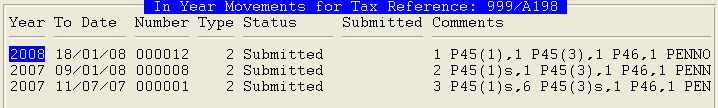

Selecting the Return to Work With
On accessing the In Year Workbench, if you operate multiple tax schemes within the current (PR TAXREFS parameter = Y), will initially display a list of tax schemes. Select which scheme you want to work with.
Having selected the tax scheme (or initially if you only operate one tax scheme), will display a list of returns for the tax scheme with the most recent at the top.

If there are new s/s, they will be added automatically to an incomplete return. If there is no incomplete return to add to, one is created automatically. The new return will default to a live return, but you can amend to a test-in-live return using the F7-Type option, if required. F10 can be used to delete an incomplete return, so that you can back out and start afresh.
As with End of Year returns, there are three types of returns:
- 0 - a live submission
- 1 - a test in live submission
- 2 - a vendor test (only can submit vendor tests)
The statuses are the same as for End of Year returns:
- Incomplete - not yet validated as ready to submit
- Complete - validated and ready to submit
- Submitting - in the process of submission
- Submitted - successfully submitted